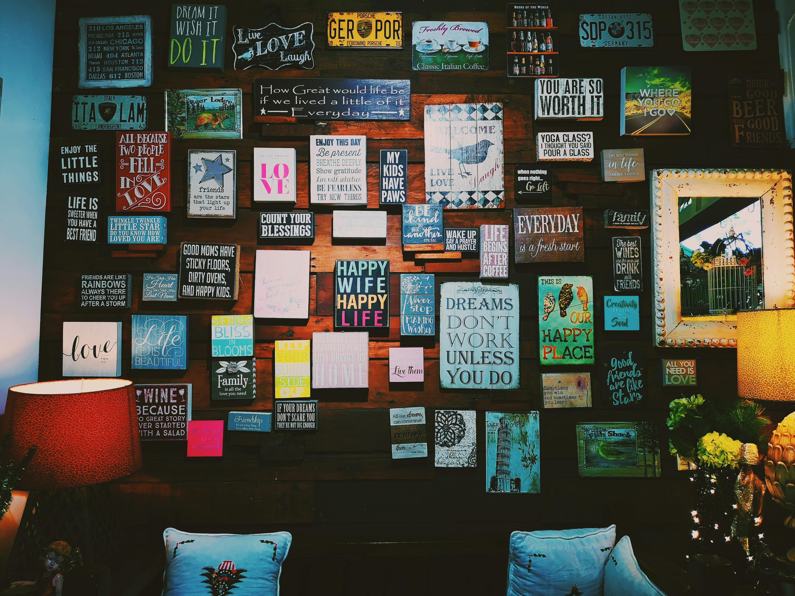

About Me

I'm a Senior iOS Developer with 5+ years of hands-on experience
building, modernizing, and maintaining iOS applications using Swift,
SwiftUI, UIKit, and Objective-C. I take ownership of the entire delivery
lifecycle—from discussing requirements directly with clients to architecture,
implementation, testing, App Store release, and ongoing support.
My engineering work spans digital health, connected devices, computer
vision, and consumer applications. Areas I've worked on include
custom rPPG-based face scanning, integration of open-source ML models,
BLE device connectivity, Apple HealthKit, OpenCV, REST APIs, and Firebase.
I prioritize maintainable code, practical architecture decisions, code reviews,
and dependable delivery. I also use AI coding tools to support development,
while personally reviewing changes, validating behavior, and keeping control
of the final code.
Professional Expertise
Experience & Ownership
Senior iOS Developer — Whizcamp Pvt Ltd (2023–Present)
Lead iOS delivery end to end, collaborate directly with clients on requirements
and feedback, manage app releases, and maintain ongoing products.
iOS Developer / iOS Trainee — Zero IT Solutions (2020–2023)
Developed and supported iOS features using Swift, Objective-C, UIKit,
integrations, and reusable components.
Selected client-product exposure: Contributed through
project/contract engagements to work associated with
Starkey Hearing Technologies and DIVERoid.
These were client projects, not direct employment roles.
Technical Skills
- Languages & UI: Swift 5, Objective-C, SwiftUI, UIKit, Auto Layout
- Architecture & data: MVVM, MVC, Core Data, Realm, Combine
- Integrations: REST APIs, Firebase, BLE hardware, Apple HealthKit,
OpenCV, third-party SDKs, push notifications
- Delivery & quality: Xcode, Git, code reviews, refactoring,
debugging, App Store Connect, certificates, provisioning, releases
- AI-assisted workflows: Claude, ChatGPT, coding agents;
independent verification and review of generated code
- Additional exposure: Dart/Flutter for basic UI and authentication flows
How I Work
- Discuss requirements with clients, translate feedback into product changes,
and own feature delivery through release.
- Design and maintain clean, readable code; review commits and remove
redundant or unused implementations.
- Handle App Store submissions, signing and certificates, notifications,
and post-release troubleshooting.
- Apply research-driven problem solving to health-tech features,
ML-assisted integrations, and connected-device workflows.
Education & Learning
- M.Sc. Information Technology — Government Mohindra College,
Patiala (2019–2021)
- Bachelor of Computer Applications (2016–2019)
Selected Learning
- Claude Code in Action — Anthropic
- Claude 101 — Anthropic
Contact
Open to discussing Senior iOS Developer opportunities, remote collaboration,
and technically challenging mobile products.
Email: mehra.karank@gmail.com
LinkedIn: mehrakarank
GitHub: WorkWithKaranMehra